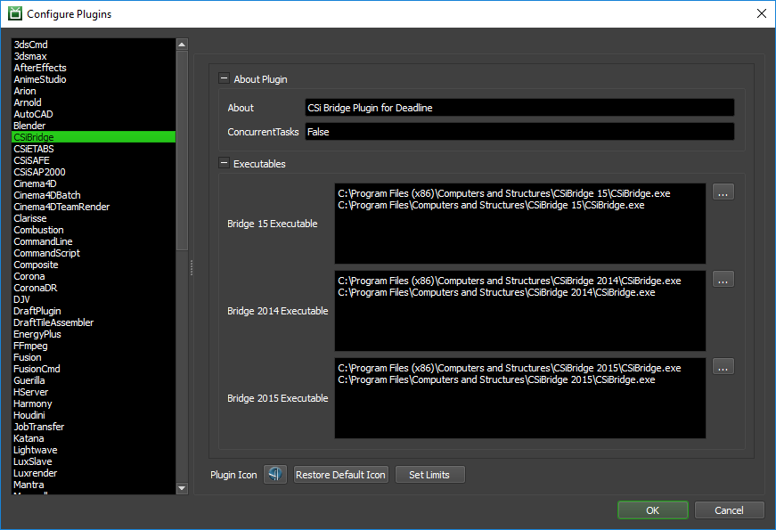

CSiBridge¶
Job Submission¶
You can submit CSiBridge jobs from the Monitor.
Submission Options¶
The general Deadline options are explained in the Job Submission documentation. The CSiBridge specific options are:
CSi Bridge Data File(s): The CSi Bridge Data File to be processed. CSi Bridge Files (*.BDB), Microsoft Access Files (*.MDB), Microsoft Excel Files (*.XLS), CSi Bridge Text Files (*.$BR *.B2K) are supported.
Override Output Directory: If this option is enabled, an output directory can be used to re-direct all processed files to.
Build To Force: You can force 32 or 64 bit processing with this option.
Submit Data File With Job: If this option is enabled, the Bridge file will be submitted with the job, and then copied locally to the Worker machine during processing.
Version: The version of CSiBridge to render with.
CSiBridge Process/Solver Options are:
Process Selection: Choose to execute inside of the existing Bridge application process or as a separate process.
Solver Selection: Select the Solver to perform the analysis on the data file.
CSiBridge Design Options are:
4 options are available to automatically perform design after the data file has been opened & analysis results are available.
Steel Frame Design: Perform steel frame design after the analysis has completed.
Concrete Frame Design: Perform concrete frame design after the analysis has completed.
Aluminium Frame Design: Perform aluminium frame design after the analysis has completed.
Cold Formed Frame Design: Peform cold formed frame design after analysis has completed.
CSiBridge Deletion Options are:
Temp File Deletion: Choose a deletion option to cleanup the analysis/log/out files if required.
CSiBridge Additional Options are:
Include Data File: If enabled, the output zip file will contain the data file OR if outputting to a directory path, the data file will be included.
Compress (ZIP) Output: Automatically compress the output to a single zip file.
Command Line Args: Additional command line flags/options can be added here if required.
Plugin Configuration¶
You can configure the CSiBridge plugin settings from the Monitor. While in power user mode, select Tools -> Configure Plugins and select the CSiBridge plugin from the list on the left.
Executables
Bridge 15 Executable: The path to the Bridge 15 executable file used for simulating. Enter alternative paths on separate lines.
Bridge 2014 Executable: The path to the Bridge 2014 executable file used for simulating. Enter alternative paths on separate lines.
Bridge 2015 Executable: The path to the Bridge 2015 executable file used for simulating. Enter alternative paths on separate lines.
FAQ¶
Currently, there are no FAQs for this plugin.
Error Messages and Meanings¶
This is a collection of known CSiBridge error messages and their meanings, as well as possible solutions. We want to keep this list as up to date as possible, so if you run into an error message that isn’t listed here, please visit the Thinkbox Help Centre and let us know.
Currently, no error messages have been reported for this plugin.

{kind=link}
{kind=link}
{kind=link}